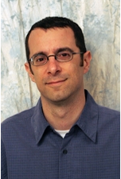
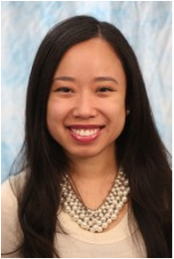
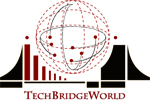
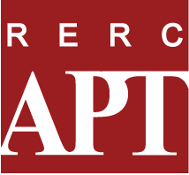
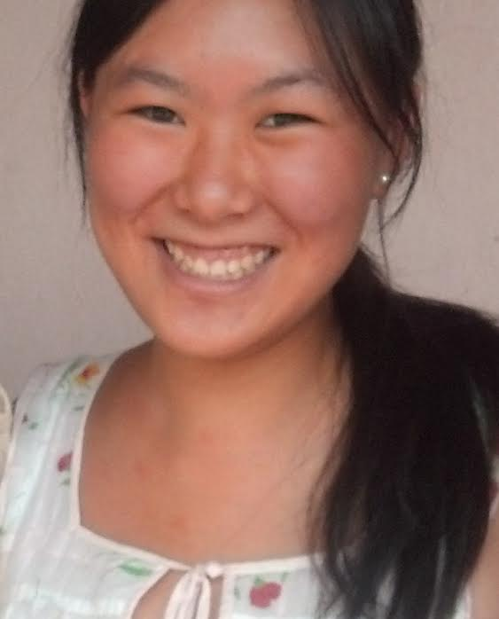
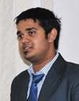

Meet the team
| M. Bernardine Dias Associate Research Professor, Robotics Institute, Carnegie Mellon University Founder and Director, TechBridgeWorld Co-Founder and Co-Director, rCommerce Lab Email: mbdias 'AT' ri.cmu.edu |
|
|  | Aaron Steinfeld Associate Research Professor, Robotics Institute, Carnegie Mellon University Email: steinfeld 'AT' cmu.edu |
| Byung-Cheol Min Postdoctoral Fellow, Robotics Institute, Carnegie Mellon University Email: bmin 'AT' cs.cmu.edu |
|
|  | Ermine A. Teves Staff, Robotics Institute, Carnegie Mellon University Project Manager, TechBridgeWorld Email: eteves 'AT' cs.cmu.edu |
| Vivek Nair Student, Electrical and Computer Engineering, Carnegie Mellon University |
Research labs
The TechBridgeWorld research group, based in the Robotics Institute at Carnegie Mellon University, innovates and field tests technology solutions to meet sustainable development needs around the world. Working closely with local partners who understand the needs of specific communities, TechBridgeWorld contributes its technical expertise to help realize the community’s vision of development by inventing new tools, customizing existing technology, and inspiring the community’s future technologists.
 The Rehabilitation Engineering Research Center on Accessible Public Transportation (RERCAPT) research group is a partnership between the Robotics Institute at Carnegie Mellon University and the the IDeA center at SUNY Buffalo. The mission of RERCAPT is to research and develop methods to empower consumers and service providers in the design and evaluation of accessible transportation equipment, information services, and physical environments.
Past team members
|  | Lucy Pei Student Intern |
 | Suryansh Saxena Research Intern |
Acknowledgments
We thank Rethink Robotics for their support for our project.